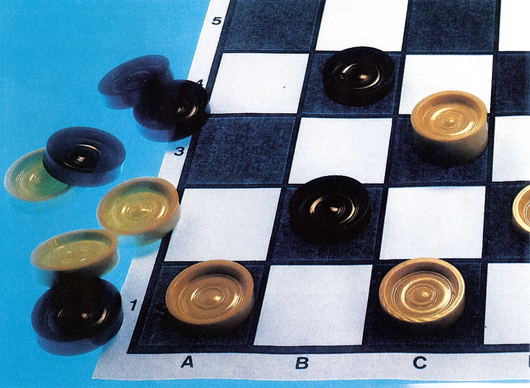

Dame — Strategie ist alles
Zu den beliebtesten logischen Brettspielen gehören die traditionsreichen Spiele Schach und Dame. Während gute Schachprogramme schon seit Jahren auf dem C 64 und dessen Vorgängern vorhanden sind, fehlte bisher der entscheidende Durchbruch beim Damespiel. Unser Listing des Monats füllt diese Lücke.

Das Damespiel, in manchen Ländern auch als »Damrod« bekannt, hat ähnlich dem Schachspiel eine lange Tradition. Schon während der ägyptischen Blütezeit diente es der Unterhaltung und Übung des logischen Denkens. Den beiden Programmautoren Rudolf und Alexander Huber ist es gelungen, bei Ihrem Programm »Dame« Spielstärke, Bedienungskomfort und eine ansprechende Spieldarstellung miteinander zu verbinden. So können beispielsweise sechs Spielstärken und der Turniermodus (Programm zieht spätestens nach fünf Minuten) gewählt werden, wobei die Stufen drei und vier in etwa einem guten Damespieler gerecht werden. Die Bedienung kann sowohl über Joystick, als auch Tastatur erfolgen, wobei ein blinkendes Quadrat die Figur markiert, mit der gezogen werden kann. Spielzüge müssen nicht umständlich durch Zahlen- und Buchstabenkombinationen eingegeben werden, vielmehr kann man einfach von einem Spielstein zum nächsten umschalten, wobei nur diejenigen Steine erfaßt werden, die auch wirklich ziehen können.
Bedienungskomfort
Wird ein Stein fixiert (durch <RETURN> oder den Feuerknopf am Joystick), können die mit diesem Spielstein durchführbaren Züge in gleicher Weise ausgewählt werden. Eine Fehlbedienung ist somit ausgeschlossen. Hat man doch einmal den falschen Stein angewählt, führt man einfach das blinkende Quadrat nochmals auf diesen Stein und drückt <RETURN>. Hiermit ist der fälschlicherweise angewählte Spielstein wieder freigegeben. Weiterhin hervorstechend ist etwa die Möglichkeit, beliebige Stellungen einzugeben und somit ab einem bestimmten Punkt weiterspielen zu können. Sofern Sie einmal in eine Spielsituation geraten, in der Sie Hilfe benötigen, erhalten Sie diese ebenfalls vom Programm. Der C 64 übernimmt dann für einen Zug die Steine des Spielers und »kämpft« gegen sich selbst. Gefallen Ihnen die Farben des Brettes, des Vorder- und Hintergrundes, der eigenen oder gegnerischen Spielsteine nicht, kann mit den Funktionstasten und <INST/DEL> diesem Umstand einfach begegnet werden. Die hochauflösende Grafik der Spielfelddarstellung, akustische Benachrichtigung des Spielers bei erfolgtem Zug, Zugtiefenanzeige sowie die Ausgabe der benötigten Zeit je Zug runden das Bild ab und lassen das Spiel mit dem elektronischen Gegner zur Freude werden. Es ist empfehlenswert, bei Spielstärke »1« oder »2« zu beginnen, um sich langsam an das Verhalten dieses neuen Gegners heranzutasten.
(Rudolf und Alexander Huber/bj)Dame — Strategie ist alles
Als Gewinner des Knobel-Wettbewerbs aus Ausgabe 8/86 präsentieren wir Ihnen ein Dame-Spiel, das sich durch gute Grafik und hohe Spielstärke auszeichnet.
Eines der beliebtesten Brettspiele ist das Dame-Spiel. Bei diesem Spiel, das auf einem 8 x 8-Felder großen Brett gespielt wird, kommt es darauf an, die 12 gegnerischen Spielsteine zu schlagen. Verloren hat, wer keine Steine mehr besitzt. Die Steine werden durch diagonales Überspringen genommen. Dies funktioniert nur, wenn hinter der gegnerischen Figur ein Feld frei ist.
Dieses Programm ist das Ergebnis unseres Knobel-Wettbewerbs. Durch die gelungene Grafik und die hohe Spielstärke gelang es diesem Programm, den ersten Platz zu erreichen. Nicht zuletzt deshalb, da gute Dame-Spiele nur schwer im Software-Handel zu finden sind.
Bitte geben Sie zuerst das Dame-Programm (Listing 1) mit dem MSE ein und speichern es. Der Start erfolgt mit RUN. Nun werden Sie nach der Spielstärke gefragt. Die Auswahl setzt sich folgendermaßen zusammen:
1: Zieht sofort
2: etwa 2 Sekunden Bedenkzeit
3: Bedenkzeit 15 Sekunden
4: Rechendauer 3 Minuten
5: Computer überlegt 30 Minuten
6: Bedenkzeit des C 64: mehrere Stunden
T: zieht spätestens nach 5 Minuten (Turniermodus)
Brettdarstellung
Spielsteine werden durch zwei konzentrische Kreise dargestellt. Bei Damen ist der innere Kreis mit der Steinfarbe gefüllt.
Am Spielfeld rechts oben wird (jeweils für einen Zug) die eigene verbrauchte Zeit, die Zeit des Computers und die Anzahl der berechneten Stellungen angezeigt. Die Farbe des Spielfelds und der Steine kann mit folgenden Tasten verändert werden:
<F1> — Farbe der eigenen Steine
<F3> — Farbe der gegnerischen Steine
<F5> — Vordergrund
<F7> — Farbe des Spielfelds
<INST/DEL> — Hintergrund
Zugeingabe
Der Cursor (blinkendes Quadrat) kann entweder durch einen Joystick an Port 2 oder mit der Tastatur bewegt werden. Der Cursor bewegt sich dabei nur auf Steinen, die in der Stellung auch ziehen können. Durch Drücken des Feuerknopfs (oder <RETURN>) bewegt sich der Cursor weiter zu den Feldern, die mit dem Stein erreicht werden können. Bei Mehrfach-Zügen muß die Prozedur wiederholt werden.
Falls man den Zug nicht ausführen will, genügt ein Druck auf die Feuertaste (oder <RETURN>), wenn der Cursor auf dem Stein steht. Eine Zugrücknahme ist nicht vorgesehen, ist aber durch eine Stellungseingabe möglich (siehe unten).
Weitere Funktionen
| <←> | : | Computer bricht Berechnung ab und zieht sofort |
| <*> | : | Vertauschen der Spieler |
| <S> | : | Stellungseingabe-Modus |
Durch Bewegen des Cursors und Drücken des Feuerknopfs kann das Feld, auf dem der Cursor steht, in einen beliebigen Stein verwandelt werden. Nochmaliges Drücken des Feuerknopfs führt wieder in den Eingabemodus zurück. Weiter sind möglich:
| <E> | : | Beendet Stellungseingabe-Modus |
| <L> | : | Löschen des Spielfelds |
| <G> | : | Grundstellung |
Ein neues Spiel kann jederzeit durch <RUN/STOP+RESTORE> begonnen werden.
(Alexander Huber/dm)